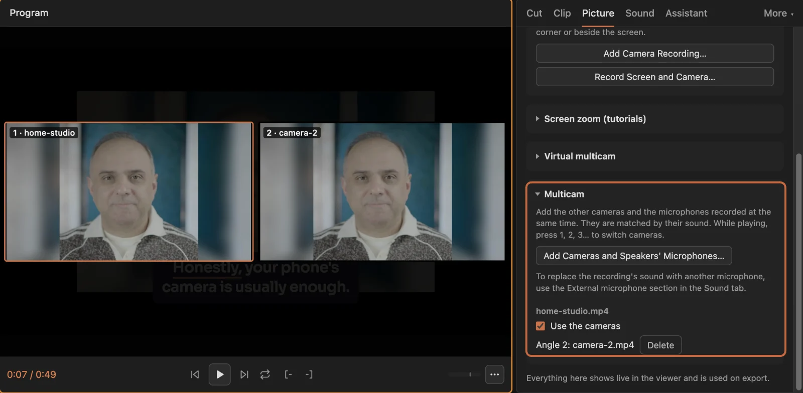

Multicam and speakers
Filmed with several cameras, or with a microphone on each speaker? Kilnframe lines them up by their sound and cuts to whoever is speaking.

Several cameras
- Add themIn Picture › Multicam, press Add Cameras and Speakers' Microphones… and choose the other cameras and the microphones recorded at the same time. They are matched by their sound.
- Turn them onTick Use the cameras.
- Follow who speaksFollow Who Speaks cuts to the camera on whoever speaks, read from the microphones. Choose which camera each microphone is on. When several speak at once, the cut goes to the wide camera, the one no microphone is on.
While playing, press 1, 2, 3… to switch cameras yourself. ⇧ V shows every camera side by side over the viewer (Angles).
Close-ups from one wide shot
With one camera on two or more people, Virtual multicam makes a close frame for each person and cuts to whoever speaks. Press Frame Whoever Speaks; it runs on this computer. While playing, 1, 2, 3… switch to that person and 0 to the wide shot. It works best with 4K.
An external microphone
To replace the recording's sound with a microphone recorded apart (a clip-on mic, a recorder), use Sound › External microphone › Add Microphone Recording… It is matched by its sound. Back to Camera Sound undoes it. From Media, Line Up with the Recording (as a Microphone) does the same.
Synchronize by hand
For a video and a sound clip on the timeline that belong together, select both and choose Synchronize (⌥ ⌘ G): they are lined up by their sound.